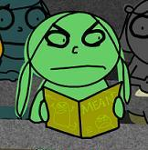
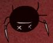

Yesterday was Missy's birthday. Gen and I planned a little gathering for her with "Missy-sized" treats and various awesome people. It was small, but we had a really good time. Missy's parents took us out to Dipalma's and that was delicious. Apparently I had an alergic reaction to the mushrooms like Gen did last year, sorta. Last year, I opted out of Dipalma's because Missy's parents didn't like me very much, so I think I stayed in my dorm room. It was a nice dinner this year, alot of people showed up.
I made Missy a card. It was a real nice card, I might have to scan it to show what it looked like. We watched the football game, and GOD, how disappointing was that? I haven't watched football all season, but we SUCKED on Saturday. We would get a first down and always fuck things up, it was just fantastic. I guess we didn't have a very challenging schedule this year if we can't beat a team like LSU. I mean, Middle Tennessee State? What the hell is that?
Well, after halftime when everyone knew things would end badly, we started drinking and I got wild...oh well, nothing good can come from that. We went downtown, Missy got some, we are all 21 now. Wow, next semester will be a whole lot of fun. I can't wait to go downtown for New Year's. I want to go barhopping with Missy and Gen :-D
I need to do a Spanish project now, uck...so yah, I better get on that. Maybe I'll go make dinner first...save me
Am having a very strange morning. I'll be in that pile in just a moment.
You didn't save me, I asked you to save me, I'm not sure if you noticed, but after I said I'd eat dinner I requested that you help me. I guess maybe you didn't realize it was urgent, oh well. Thanks for not caring about me, you could have at least called me or sent me a message. Whatever, the project's done, I saved myself once again. You should be ashamed of yourself...
So, shall I start this with a life lesson? Maybe that's just annoying and you wouldn't care, so let's proceed to strange Monday morning! Ok, so I was probably on my fifth or sixth vocabulary word on my Spanish project at about 5:45 this morning, and I just wanted to sleep so bad. I wouldn't stop though, not until I finished the Vocab. Even then, I wouldn't stop until I had Lucinda Consoled EVERY WORD. And it was almost perfect.
Well, after I found all my necessary unmentionables for the walk to the bus, I noticed it was very cold outside. You would think I would have some idea from spending the whole night last night inside my warm abode, usually some shiver jumps through the wall, but as far as I knew, I was wasting precious heat. It's a good thing I pushed the heat button or I would have not noticed.
Well, a mailbox was steaming while I proceeded down the road. I think it was because the sun had just hit it and that nasty frost was being melted away. I also didn't recieve a newspaper this morning. Bummer. I guess no Monday morning bus reading for me :-( The bus ride has interesting little dozzing off's and staring contests, but when I got to school, I just sorta walked in a daze, up the hill to the Student Learning Center.
Normally I'd go to the Lambda Resource Office, but lucky for me, I've learned to avoid it for obvious reasons on Monday. I really hate being aggitated when I've gotten no sleep whatsoever. I think every annoying whine or feminine remark would permiate me and I wouldn't struggle to resist until it was too late and it had buried itself inside of me, causing acne and indigestion six months from now. Thank god I made it to the Student Learning Center in time.
Walking to the SLC, I wanted to see people. Maybe Erin since I was listening to her emo CD, but also Matt. I want to see Matt, I want to see him all the time, at the most uncustomary opportunities. You know, if I went down to get my phone this morning and he was eating a chicken sandwhich and sipping on a glass of milk, well, I think that would make me the happiest guy in the world for all the wrong reasons...but, like I should say, we'll not get into that. Matt wasn't around, so I kept walking.
What's a good song? Leave me with that at least, let's see if you can answer this small request. What's going to spin me round? If you appreciate this, you'll tell me. Let me know, otherwise, I'll talk to you about the football game later...or, yah, maybe I already had that conversation.
Oh, Spanish project editing!
"One mistake's all it takes
And your life has come undone
Walk away cause you're breaking up the girl
It's a drag, I know it's hard
But you're tearing her apart
Walk away, cause you're breaking up the girl..."
"Breaking Up The Girl"
garbage
Uh, today will consist of recovering from Sunday's staying up all night and Monday's incessant doing of things. First, there was class. Next, there was preparing for the volunteer pizza party (at least I'm appreciative of people...) Then, there was Matt's Christmas party, which was fun, but I quite obviously needed several hours of sleep. I got some last night, gonna get some more today, oh yah!
Finals for me are on Wednesday, Friday, Monday and Tuesday. I'm studying hardcore for the first two because they are the classes I have some chance to get an A in. The other two...alas, B's probably. I'll try my best.
I'll probably go home next Tuesday to start the agonzing break. I really hate this time of year. Can't wait for Spring Break...
Maybe I'll go out Wednesday, but I don't know...I'd probably be the only one because of finals, but I can't help it if I don't have anything on Thursday :-D We'll see...

Yay, a new Making Fiends cartoon :-D I love the cartoon, so much better than the Halloween one (though the cookie fiend was kinda cute). The good news, along w/ the new cartoon, is that Amy is going to make more fiendish episodes for the series! It seemed from the episode page it would only have 6 and this would be the last episode, but not anymore! 10 at least.
I know it may not be as fun as MuffinFilms, but Making Fiends is, in it's own sense, unique. I think it blows away stuff like Homestarrunner.com I mean, don't get me wrong, I am a Strong Bad nut just like the rest of you (actually I'm very partial to Homsar), but it seems like it's becoming so bit it's losing its appeal. People always stop me when they see my shirts, they are like, "Wow, it's Pom-Pom!" I'm like, "I know...funny..." Not really.
Anyways, final tomorrow...fun times, right? Should I drive or ride...what to do what to do... Oh! Office might be open while I brush up on my editting skills before the test. Maybe you should stop by, or call, or something...don't just stand there...
Oh, and shout-out to Joseph...the Battlestar Galactica TV thing wasn't that bad, it was entertaining. I'd watch a series, haven't seen anything Sci Fi intriguing lately...would be nice. Ok, onto cake and Missy, to be eaten in that order.

"Here kitty, I have something special for you. Super-big fleas...with KNIVES!" ~that bitch Vendetta :-D
Nobody's going to be there anyways...I suppose I can dance some other time.
I'll download Cure songs until someone gives me a reason not to...or my bed becomes alittle too tempting to ignore.
Top Ten moments of Fall Semester 2003:
- 10. Sorority Date Night/Semi-formal: spending time with my sorority girl kicks ass! I love all her friends (Bethany, Linda, Rachel, that girl that kept laughing at me at the table, Jayna and her b/f, etc.), BANANA PUDDING!
- 9. Midterms: starting my new habit of staying up all night to do papers/projects/studying and getting a 90 on my English midterm and a 90 on my first Spanish essay...haven't felt that good grade wise for a very long time...
- 8. First Krush Girls show: getting all the way to the door, realizing Matt forgot his ID, NOT GOING IN, going home and spending the only night before my last hell weekend at Taco Mac with the guy I love (only cheesy moment you're getting, so ENJOY IT!)...
- 7. Marilia: random talks we would have, the most memorable being the "Bunching!" one where I had to run away and hide because I thought she was rabid :-)
- 6. Fall Break trip to see John: UBER TOAST (you try to think of a food that start with the letter U), watching Barry get drunk on the balcony, sleeping with John ;-p Fighting and then making up with Matt, never wanting to watch 28 Days Later ever again...
- 5. April's First Party: the GREEN M&M'S! Missy and I CERTAINLY made this semester the raunchiest ever! Making it to Boneshakers to talk to some people that looked familiar, but I don't remember what I said :-x Oh, yah, and that whole contact situation :-(
- 4. Trebor Healey meeting: Matt came along, he never does that...best Lambda meeting of the semester! He was so interesting, everyone responded so positively, had alot of fun at the dinner after the meeting, it was CHINESE! I love Cheng's Downtown, even though the lady was a bitch and messed up Marilia's order :-)
- 3. Gen's Birthday Party: BUD LIGHT KEG! avoiding the cops, showing Laura my laptop doing the strange LCD screen thing (that has not occured since), holding up Gen while she did a keg stand, talking to her in the hallway before we went to bed...
- 2. MY 21ST BIRTHDAY PARTY! Walking in and saying hey to everyone that came (Kristi, Vicki, Mary Kate, Laura and co. being the most special ones), slowly making it through that first agonzing drink, making out with Missy and Laura! Phone calls and messages to my sister (which I still have saved on my cell phone!), fighting with people upstairs, that fateful game of mercy and chugging w/ Bryant that had me falling on the floor and forgetting...EVERYTHING!
- 1. Chris and Liz's Birthday Party: Best party EVER! Being completely sober and having an excellent time! Being very nervous about party participation than being completely overwhelmed when SO MANY PEOPLE filled my house, Missy coming up to me, "Let's do a body shot!" Me saying, "Missy wants a body shot!" then watching her take the shot off Liz's chest :-p Dealing with the cop, uck, and the BEST MOMENT OF THE EVENING, watching Missy grab Chip's hand and bring up upstairs...excellent
Missy's Birthday isn't up there...I just want to say something in defense of that decision...I had a good time, but it wasn't as BIG as Gen and my birthdays. Let me just say Missy is a part of alot of my most fun things, and we're saving our BIG celebration of all of our 21st birthdays for New Year's. Look for that in Spring Semester 2004's Top Ten ;-)